Mia
中文短文本情感三分类（负面 / 中性 / 正面）小模型。两个发布版本：mia-laya（322M，Laya 判别头）与 mia-qwen3.5-2b（1.9B，Qwen3.5-2B 文本主干直接做分类）。这一页只放数字和图；来龙去脉、数据、训练心得在 README。
mia-qwen3.5-2b
mia-laya
起点 laya-oldlabels
原版 Qwen3.5-2B 零样本
图表
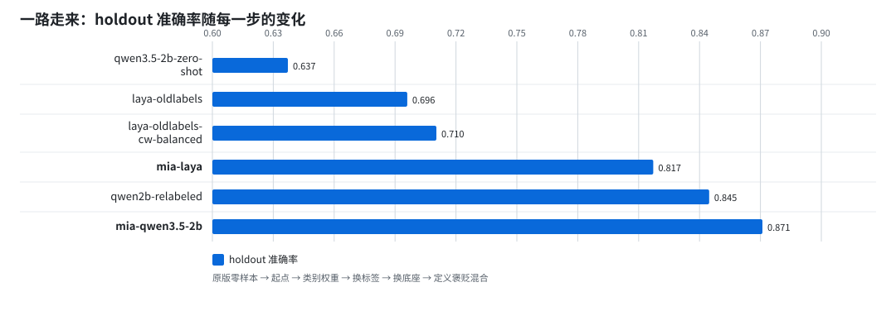
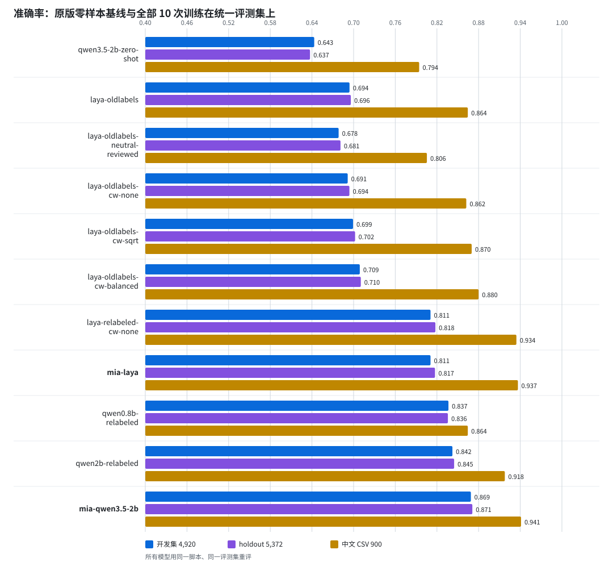
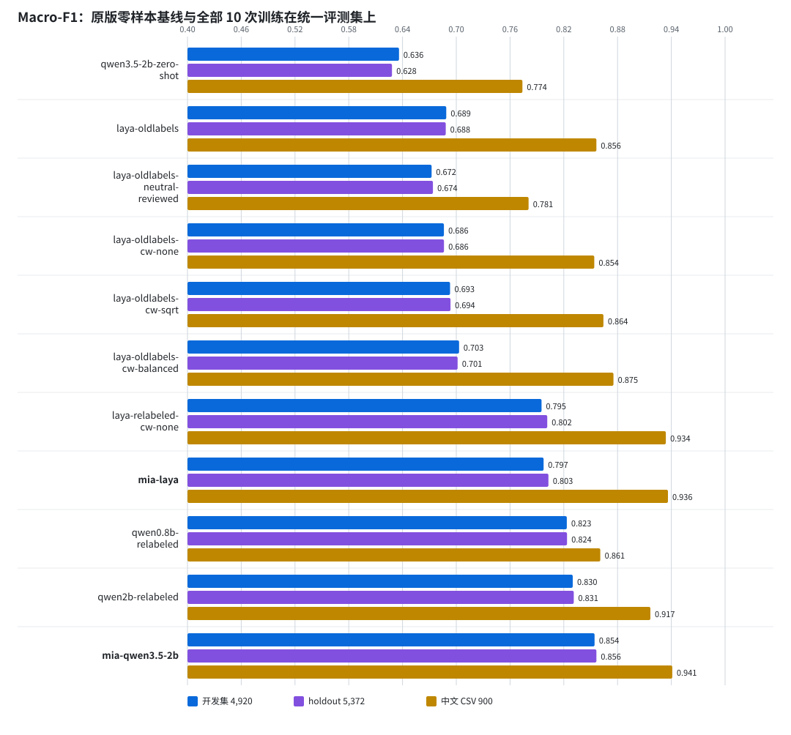
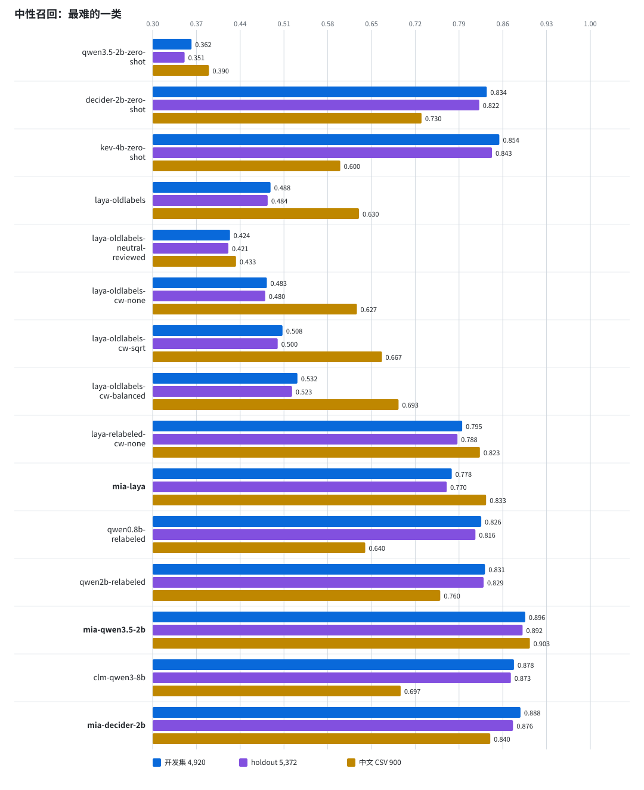
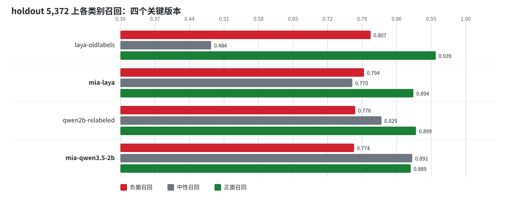
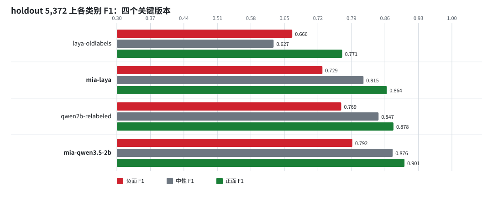
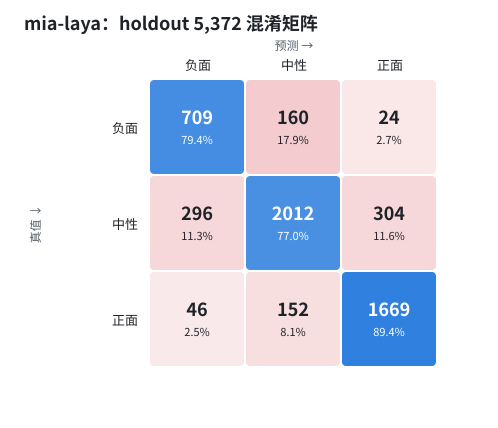
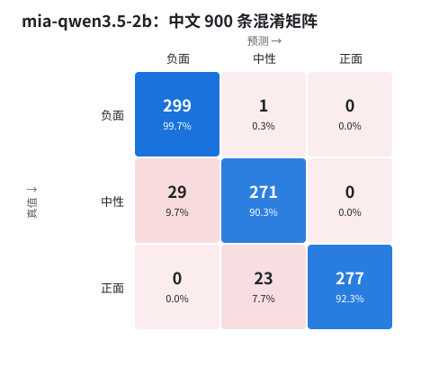
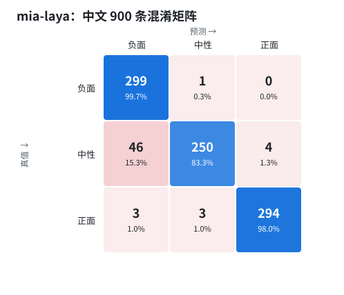
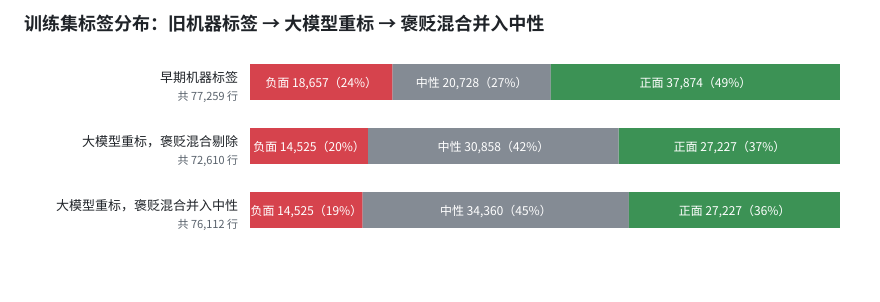
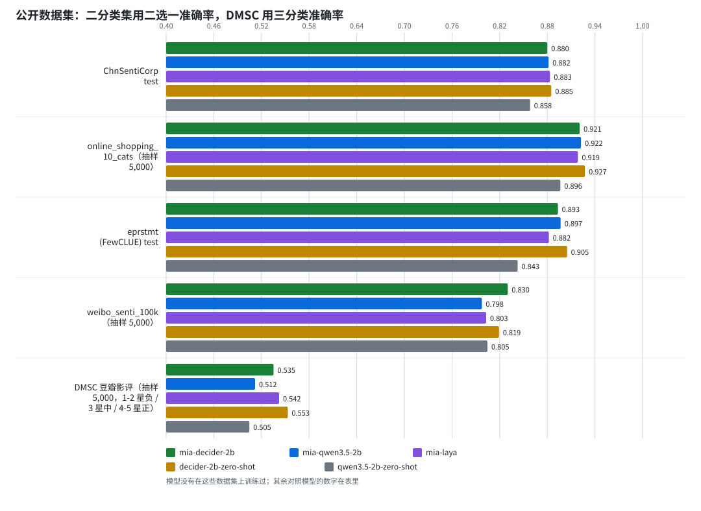
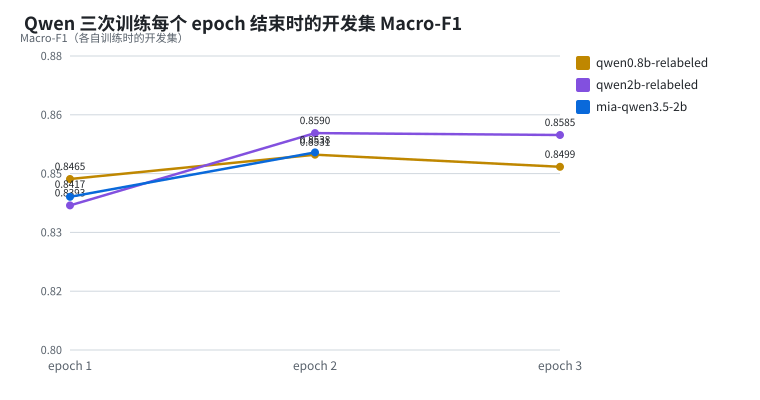
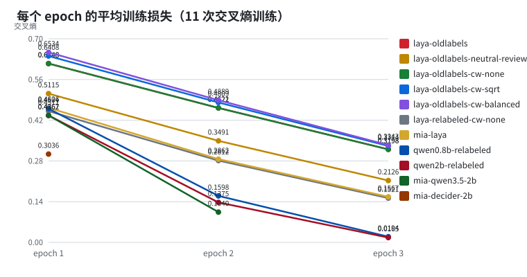
全部训练在统一评测集上的成绩
评测集：开发集 data/eval/test.jsonl (4,920 rows)；holdout data/eval/unseen-test.jsonl (5,372 rows)；中文 CSV data/eval/中文情感测试集_01/02/03.csv (900 rows, 100 per class per file)。开发集与 holdout 的标签来自大模型重标（褒贬混合并入中性），中文 CSV 是独立标注的模板化基准。每格为 准确率 / Macro-F1 / 中性召回。
| 模型 | 底座 | 参数量 | 训练标签 | 类别权重 | epochs | 开发集 4,920 | holdout 5,372 | 中文 CSV 900 |
|---|---|---|---|---|---|---|---|---|
qwen3.5-2b-zero-shot | Qwen3.5-2B 原版，未微调，零样本受限选择 | 约 2B | 无（零样本，同一三分类口径的提示词） | — | — | 0.6433 / 0.6361 / 0.362 | 0.6372 / 0.6283 / 0.351 | 0.7944 / 0.7738 / 0.390 |
laya-oldlabels | Laya multilingual (mmBERT-base) | 322M | 早期机器标签 | none | 3 | 0.6941 / 0.6888 / 0.488 | 0.6960 / 0.6882 / 0.484 | 0.8644 / 0.8564 / 0.630 |
laya-oldlabels-neutral-reviewed | Laya multilingual (mmBERT-base) | 322M | 早期机器标签 + 两轮 AI 复核中性 | none | 3 | 0.6785 / 0.6725 / 0.424 | 0.6811 / 0.6739 / 0.421 | 0.8056 / 0.7807 / 0.433 |
laya-oldlabels-cw-none | Laya multilingual (mmBERT-base) | 322M | 早期机器标签 | none | 3 | 0.6915 / 0.6862 / 0.483 | 0.6940 / 0.6863 / 0.480 | 0.8622 / 0.8540 / 0.627 |
laya-oldlabels-cw-sqrt | Laya multilingual (mmBERT-base) | 322M | 早期机器标签 | sqrt | 3 | 0.6992 / 0.6931 / 0.508 | 0.7022 / 0.6935 / 0.500 | 0.8700 / 0.8642 / 0.667 |
laya-oldlabels-cw-balanced | Laya multilingual (mmBERT-base) | 322M | 早期机器标签 | balanced | 3 | 0.7089 / 0.7031 / 0.532 | 0.7103 / 0.7014 / 0.523 | 0.8800 / 0.8754 / 0.693 |
laya-relabeled-cw-none | Laya multilingual (mmBERT-base) | 322M | 大模型重标（褒贬混合剔除） | none | 3 | 0.8108 / 0.7951 / 0.795 | 0.8178 / 0.8015 / 0.788 | 0.9344 / 0.9339 / 0.823 |
mia-laya 发布版 | Laya multilingual (mmBERT-base) | 322M | 大模型重标（褒贬混合剔除） | balanced | 3 | 0.8108 / 0.7974 / 0.778 | 0.8172 / 0.8028 / 0.770 | 0.9367 / 0.9362 / 0.833 |
qwen0.8b-relabeled | Qwen3.5-0.8B 文本主干 | 752M | 大模型重标（褒贬混合剔除） | none | 3 | 0.8366 / 0.8233 / 0.826 | 0.8358 / 0.8236 / 0.816 | 0.8644 / 0.8607 / 0.640 |
qwen2b-relabeled | Qwen3.5-2B 文本主干 | 1882M | 大模型重标（褒贬混合剔除） | none | 3 | 0.8423 / 0.8300 / 0.831 | 0.8448 / 0.8311 / 0.829 | 0.9178 / 0.9166 / 0.760 |
mia-qwen3.5-2b 发布版 | Qwen3.5-2B 文本主干 | 1882M | 大模型重标（褒贬混合并入中性） | none | 2 | 0.8689 / 0.8543 / 0.896 | 0.8710 / 0.8564 / 0.892 | 0.9411 / 0.9411 / 0.903 |
各类别精确率 / 召回 / F1 与混淆矩阵
| 模型 | 集合 | 负面 P / R / F1 | 中性 P / R / F1 | 正面 P / R / F1 | 混淆矩阵（行=真值 负/中/正） |
|---|---|---|---|---|---|
qwen3.5-2b-zero-shot | 开发集 | 0.394 / 0.988 / 0.564 | 0.912 / 0.362 / 0.518 | 0.787 / 0.870 / 0.826 | [[828, 4, 6], [1132, 866, 393], [140, 80, 1471]] |
qwen3.5-2b-zero-shot | holdout | 0.381 / 0.985 / 0.549 | 0.919 / 0.351 / 0.508 | 0.788 / 0.871 / 0.827 | [[880, 2, 11], [1268, 917, 427], [162, 79, 1626]] |
qwen3.5-2b-zero-shot | 中文 CSV | 0.621 / 1.000 / 0.766 | 0.983 / 0.390 / 0.558 | 1.000 / 0.993 / 0.997 | [[300, 0, 0], [183, 117, 0], [0, 2, 298]] |
laya-oldlabels | 开发集 | 0.581 / 0.807 / 0.675 | 0.877 / 0.488 / 0.627 | 0.648 / 0.929 / 0.764 | [[676, 94, 68], [438, 1168, 785], [50, 70, 1571]] |
laya-oldlabels | holdout | 0.567 / 0.807 / 0.666 | 0.892 / 0.484 / 0.627 | 0.654 / 0.939 / 0.771 | [[721, 99, 73], [491, 1264, 857], [59, 54, 1754]] |
laya-oldlabels | 中文 CSV | 0.822 / 0.987 / 0.897 | 0.969 / 0.630 / 0.764 | 0.849 / 0.977 / 0.909 | [[296, 3, 1], [60, 189, 51], [4, 3, 293]] |
laya-oldlabels-neutral-reviewed | 开发集 | 0.556 / 0.863 / 0.676 | 0.927 / 0.424 / 0.582 | 0.634 / 0.947 / 0.760 | [[723, 45, 70], [523, 1013, 855], [54, 35, 1602]] |
laya-oldlabels-neutral-reviewed | holdout | 0.555 / 0.865 / 0.676 | 0.943 / 0.421 / 0.582 | 0.635 / 0.957 / 0.763 | [[772, 46, 75], [559, 1100, 953], [59, 21, 1787]] |
laya-oldlabels-neutral-reviewed | 中文 CSV | 0.759 / 0.997 / 0.862 | 0.992 / 0.433 / 0.603 | 0.789 / 0.987 / 0.877 | [[299, 1, 0], [91, 130, 79], [4, 0, 296]] |
laya-oldlabels-cw-none | 开发集 | 0.578 / 0.808 / 0.674 | 0.875 / 0.483 / 0.622 | 0.647 / 0.929 / 0.762 | [[677, 94, 67], [445, 1154, 792], [49, 71, 1571]] |
laya-oldlabels-cw-none | holdout | 0.566 / 0.807 / 0.666 | 0.891 / 0.480 / 0.624 | 0.651 / 0.939 / 0.769 | [[721, 99, 73], [493, 1254, 865], [59, 55, 1753]] |
laya-oldlabels-cw-none | 中文 CSV | 0.819 / 0.983 / 0.894 | 0.964 / 0.627 / 0.760 | 0.849 / 0.977 / 0.909 | [[295, 4, 1], [61, 188, 51], [4, 3, 293]] |
laya-oldlabels-cw-sqrt | 开发集 | 0.574 / 0.804 / 0.670 | 0.867 / 0.508 / 0.640 | 0.662 / 0.918 / 0.769 | [[674, 100, 64], [448, 1214, 729], [53, 86, 1552]] |
laya-oldlabels-cw-sqrt | holdout | 0.557 / 0.815 / 0.662 | 0.889 / 0.500 / 0.640 | 0.670 / 0.931 / 0.779 | [[728, 100, 65], [514, 1306, 792], [66, 63, 1738]] |
laya-oldlabels-cw-sqrt | 中文 CSV | 0.819 / 0.983 / 0.894 | 0.957 / 0.667 / 0.786 | 0.870 / 0.960 / 0.913 | [[295, 5, 0], [57, 200, 43], [8, 4, 288]] |
laya-oldlabels-cw-balanced | 开发集 | 0.572 / 0.821 / 0.675 | 0.863 / 0.532 / 0.658 | 0.681 / 0.904 / 0.777 | [[688, 98, 52], [455, 1271, 665], [59, 103, 1529]] |
laya-oldlabels-cw-balanced | holdout | 0.553 / 0.821 / 0.661 | 0.880 / 0.523 / 0.656 | 0.688 / 0.920 / 0.787 | [[733, 105, 55], [524, 1366, 722], [68, 82, 1717]] |
laya-oldlabels-cw-balanced | 中文 CSV | 0.822 / 0.983 / 0.895 | 0.954 / 0.693 / 0.803 | 0.895 / 0.963 / 0.928 | [[295, 5, 0], [58, 208, 34], [6, 5, 289]] |
laya-relabeled-cw-none | 开发集 | 0.713 / 0.733 / 0.723 | 0.839 / 0.795 / 0.816 | 0.823 / 0.872 / 0.846 | [[614, 190, 34], [206, 1901, 284], [41, 176, 1474]] |
laya-relabeled-cw-none | holdout | 0.698 / 0.753 / 0.724 | 0.851 / 0.788 / 0.818 | 0.835 / 0.891 / 0.862 | [[672, 193, 28], [254, 2057, 301], [37, 166, 1664]] |
laya-relabeled-cw-none | 中文 CSV | 0.852 / 1.000 / 0.920 | 0.988 / 0.823 / 0.898 | 0.987 / 0.980 / 0.983 | [[300, 0, 0], [49, 247, 4], [3, 3, 294]] |
mia-laya 发布版 | 开发集 | 0.692 / 0.774 / 0.731 | 0.852 / 0.778 / 0.813 | 0.823 / 0.875 / 0.848 | [[649, 157, 32], [244, 1861, 286], [45, 167, 1479]] |
mia-laya 发布版 | holdout | 0.675 / 0.794 / 0.729 | 0.866 / 0.770 / 0.815 | 0.836 / 0.894 / 0.864 | [[709, 160, 24], [296, 2012, 304], [46, 152, 1669]] |
mia-laya 发布版 | 中文 CSV | 0.859 / 0.997 / 0.923 | 0.984 / 0.833 / 0.903 | 0.987 / 0.980 / 0.983 | [[299, 1, 0], [46, 250, 4], [3, 3, 294]] |
qwen0.8b-relabeled | 开发集 | 0.759 / 0.763 / 0.761 | 0.852 / 0.826 / 0.839 | 0.853 / 0.889 / 0.871 | [[639, 172, 27], [185, 1974, 232], [18, 170, 1503]] |
qwen0.8b-relabeled | holdout | 0.750 / 0.785 / 0.767 | 0.861 / 0.816 / 0.838 | 0.845 / 0.888 / 0.866 | [[701, 161, 31], [206, 2132, 274], [28, 182, 1657]] |
qwen0.8b-relabeled | 中文 CSV | 0.732 / 1.000 / 0.845 | 0.985 / 0.640 / 0.776 | 0.969 / 0.953 / 0.961 | [[300, 0, 0], [99, 192, 9], [11, 3, 286]] |
qwen2b-relabeled | 开发集 | 0.778 / 0.767 / 0.772 | 0.857 / 0.831 / 0.844 | 0.853 / 0.895 / 0.874 | [[643, 175, 20], [163, 1988, 240], [21, 157, 1513]] |
qwen2b-relabeled | holdout | 0.762 / 0.776 / 0.769 | 0.865 / 0.829 / 0.847 | 0.858 / 0.899 / 0.878 | [[693, 175, 25], [192, 2166, 254], [25, 163, 1679]] |
qwen2b-relabeled | 中文 CSV | 0.806 / 1.000 / 0.893 | 0.991 / 0.760 / 0.860 | 1.000 / 0.993 / 0.997 | [[300, 0, 0], [72, 228, 0], [0, 2, 298]] |
mia-qwen3.5-2b 发布版 | 开发集 | 0.824 / 0.759 / 0.790 | 0.856 / 0.896 / 0.875 | 0.910 / 0.885 / 0.897 | [[636, 184, 18], [119, 2142, 130], [17, 177, 1497]] |
mia-qwen3.5-2b 发布版 | holdout | 0.811 / 0.774 / 0.792 | 0.861 / 0.892 / 0.876 | 0.914 / 0.889 / 0.901 | [[691, 185, 17], [143, 2329, 140], [18, 190, 1659]] |
mia-qwen3.5-2b 发布版 | 中文 CSV | 0.912 / 0.997 / 0.952 | 0.919 / 0.903 / 0.911 | 1.000 / 0.923 / 0.960 | [[299, 1, 0], [29, 271, 0], [0, 23, 277]] |
中文 900 条分表
| 模型 | CSV | Acc | Macro-F1 | 中性召回 | 与训练文本精确重叠 |
|---|---|---|---|---|---|
qwen3.5-2b-zero-shot | 中文情感测试集_01.csv | 0.8000 | 0.7802 | 0.400 | — |
qwen3.5-2b-zero-shot | 中文情感测试集_02.csv | 0.7967 | 0.7758 | 0.390 | — |
qwen3.5-2b-zero-shot | 中文情感测试集_03.csv | 0.7867 | 0.7654 | 0.380 | — |
laya-oldlabels | 中文情感测试集_01.csv | 0.8567 | 0.8480 | 0.610 | 0 |
laya-oldlabels | 中文情感测试集_02.csv | 0.8633 | 0.8553 | 0.630 | 0 |
laya-oldlabels | 中文情感测试集_03.csv | 0.8733 | 0.8660 | 0.650 | 0 |
laya-oldlabels-neutral-reviewed | 中文情感测试集_01.csv | 0.8100 | 0.7872 | 0.450 | 0 |
laya-oldlabels-neutral-reviewed | 中文情感测试集_02.csv | 0.8100 | 0.7870 | 0.450 | 0 |
laya-oldlabels-neutral-reviewed | 中文情感测试集_03.csv | 0.7967 | 0.7676 | 0.400 | 0 |
laya-oldlabels-cw-none | 中文情感测试集_01.csv | 0.8533 | 0.8449 | 0.610 | 0 |
laya-oldlabels-cw-none | 中文情感测试集_02.csv | 0.8633 | 0.8553 | 0.630 | 0 |
laya-oldlabels-cw-none | 中文情感测试集_03.csv | 0.8700 | 0.8621 | 0.640 | 0 |
laya-oldlabels-cw-sqrt | 中文情感测试集_01.csv | 0.8567 | 0.8494 | 0.630 | 0 |
laya-oldlabels-cw-sqrt | 中文情感测试集_02.csv | 0.8800 | 0.8749 | 0.690 | 0 |
laya-oldlabels-cw-sqrt | 中文情感测试集_03.csv | 0.8733 | 0.8681 | 0.680 | 0 |
laya-oldlabels-cw-balanced | 中文情感测试集_01.csv | 0.8600 | 0.8534 | 0.640 | 0 |
laya-oldlabels-cw-balanced | 中文情感测试集_02.csv | 0.8967 | 0.8931 | 0.730 | 0 |
laya-oldlabels-cw-balanced | 中文情感测试集_03.csv | 0.8833 | 0.8792 | 0.710 | 0 |
laya-relabeled-cw-none | 中文情感测试集_01.csv | 0.9333 | 0.9330 | 0.810 | 0 |
laya-relabeled-cw-none | 中文情感测试集_02.csv | 0.9533 | 0.9530 | 0.870 | 0 |
laya-relabeled-cw-none | 中文情感测试集_03.csv | 0.9167 | 0.9156 | 0.790 | 0 |
mia-laya 发布版 | 中文情感测试集_01.csv | 0.9333 | 0.9331 | 0.820 | 0 |
mia-laya 发布版 | 中文情感测试集_02.csv | 0.9567 | 0.9565 | 0.880 | 0 |
mia-laya 发布版 | 中文情感测试集_03.csv | 0.9200 | 0.9189 | 0.800 | 0 |
qwen0.8b-relabeled | 中文情感测试集_01.csv | 0.8633 | 0.8582 | 0.630 | 0 |
qwen0.8b-relabeled | 中文情感测试集_02.csv | 0.8800 | 0.8765 | 0.670 | 0 |
qwen0.8b-relabeled | 中文情感测试集_03.csv | 0.8500 | 0.8476 | 0.620 | 0 |
qwen2b-relabeled | 中文情感测试集_01.csv | 0.9133 | 0.9118 | 0.740 | 0 |
qwen2b-relabeled | 中文情感测试集_02.csv | 0.9267 | 0.9259 | 0.790 | 0 |
qwen2b-relabeled | 中文情感测试集_03.csv | 0.9133 | 0.9120 | 0.750 | 0 |
mia-qwen3.5-2b 发布版 | 中文情感测试集_01.csv | 0.9500 | 0.9499 | 0.900 | 0 |
mia-qwen3.5-2b 发布版 | 中文情感测试集_02.csv | 0.9433 | 0.9433 | 0.920 | 0 |
mia-qwen3.5-2b 发布版 | 中文情感测试集_03.csv | 0.9300 | 0.9301 | 0.890 | 0 |
公开数据集
模型没有在这些数据集上训练过。二分类集给四个数：二选一准确率只比较正、负两类概率；三选一严格准确率把判中性算错；判为中性的比例；只看给出极性的行的准确率。DMSC 用 1-2 星为负、3 星为中、4-5 星为正，3 星当中性只是近似。文本做与训练相同的归一化并截到 512 字。
| 公开数据集 | 行数 | 指标 | mia-qwen3.5-2b | mia-laya | laya-oldlabels | qwen3.5-2b-zero-shot |
|---|---|---|---|---|---|---|
| ChnSentiCorp test | 1,200 | 二选一准确率（只比较正/负概率） | 0.8817 | 0.8833 | 0.8783 | 0.8583 |
| 三选一严格准确率（判中性算错） | 0.6508 | 0.8225 | 0.8275 | 0.8067 | ||
| 判为中性的比例 | 0.312 | 0.087 | 0.083 | 0.082 | ||
| 只看给出极性的行的准确率 | 0.9455 | 0.9005 | 0.9027 | 0.8784 | ||
| online_shopping_10_cats（抽样 5,000） | 5,000 | 二选一准确率（只比较正/负概率） | 0.9224 | 0.9186 | 0.9192 | 0.8964 |
| 三选一严格准确率（判中性算错） | 0.7754 | 0.8786 | 0.8754 | 0.8562 | ||
| 判为中性的比例 | 0.199 | 0.058 | 0.066 | 0.062 | ||
| 只看给出极性的行的准确率 | 0.9676 | 0.9325 | 0.9377 | 0.9130 | ||
| eprstmt (FewCLUE) test | 610 | 二选一准确率（只比较正/负概率） | 0.8967 | 0.8820 | 0.8803 | 0.8426 |
| 三选一严格准确率（判中性算错） | 0.6721 | 0.8180 | 0.8033 | 0.7918 | ||
| 判为中性的比例 | 0.298 | 0.087 | 0.120 | 0.092 | ||
| 只看给出极性的行的准确率 | 0.9579 | 0.8959 | 0.9125 | 0.8718 | ||
| weibo_senti_100k（抽样 5,000） | 5,000 | 二选一准确率（只比较正/负概率） | 0.7976 | 0.8030 | 0.8278 | 0.8046 |
| 三选一严格准确率（判中性算错） | 0.6162 | 0.6650 | 0.7680 | 0.7810 | ||
| 判为中性的比例 | 0.271 | 0.192 | 0.086 | 0.034 | ||
| 只看给出极性的行的准确率 | 0.8455 | 0.8228 | 0.8399 | 0.8085 | ||
| DMSC 豆瓣影评（抽样 5,000，1-2 星负 / 3 星中 / 4-5 星正） | 5,000 | 三分类准确率 | 0.5120 | 0.5422 | 0.5728 | 0.5048 |
| 三分类 Macro-F1 | 0.4992 | 0.4666 | 0.4890 | 0.4214 | ||
| 中性（3 星）召回 | 0.508 | 0.216 | 0.235 | 0.111 |
训练侧：各自训练时的开发集、温度与校准
每次训练在自己那套数据的开发集上评一次；旧标签模型的开发集是旧标签，所以这一列不能跨行比较。温度在 calibration 切分上拟合；ECE 是 15 桶期望校准误差。
| 模型 | 训练数据 | 训练行数 | 自有开发集行数 | Acc | Macro-F1 | 温度 | 校准前 ECE | 校准后 ECE | 每 epoch 训练损失 |
|---|---|---|---|---|---|---|---|---|---|
laya-oldlabels | laya-sentiment-data-cap100-natural | 77,259 | 5000 | 0.7430 | 0.7230 | 1.7960 | 0.1287 | 0.0241 | [0.6148, 0.4621, 0.3198] |
laya-oldlabels-neutral-reviewed | laya-sentiment-data-cap100-natural-neutral-reviewed-no-uncertain | 75,692 | 5000 | 0.7386 | 0.7132 | 2.4479 | 0.1614 | 0.0168 | [0.5115, 0.3491, 0.2126] |
laya-oldlabels-cw-none | laya-sentiment-data-cap100-natural | 77,259 | 5000 | 0.7436 | 0.7231 | 1.7876 | 0.1274 | 0.0214 | [0.6148, 0.4622, 0.3198] |
laya-oldlabels-cw-sqrt | laya-sentiment-data-cap100-natural | 77,259 | 5000 | 0.7390 | 0.7208 | 1.7775 | 0.1304 | 0.0245 | [0.6408, 0.4809, 0.3314] |
laya-oldlabels-cw-balanced | laya-sentiment-data-cap100-natural | 77,259 | 5000 | 0.7388 | 0.7232 | 1.7949 | 0.1291 | 0.0198 | [0.6534, 0.4889, 0.3343] |
laya-relabeled-cw-none | laya-sentiment-data-relabeled | 72,610 | 4704 | 0.8374 | 0.8213 | 1.9932 | 0.0942 | 0.0212 | [0.4511, 0.2812, 0.1521] |
mia-laya 发布版 | laya-sentiment-data-relabeled | 72,610 | 4704 | 0.8376 | 0.8234 | 1.9488 | 0.0905 | 0.0228 | [0.4626, 0.2862, 0.1567] |
qwen0.8b-relabeled | laya-sentiment-data-relabeled | 72,610 | 4704 | 0.8642 | 0.8499 | 2.9516 | 0.0985 | 0.0206 | [0.4594, 0.1598, 0.0194] |
qwen2b-relabeled | laya-sentiment-data-relabeled | 72,610 | 4704 | 0.8718 | 0.8585 | 2.6244 | 0.0939 | 0.0224 | [0.4362, 0.1375, 0.0165] |
mia-qwen3.5-2b 发布版 | laya-sentiment-data-relabeled-mixed-neutral | 76,112 | 4923 | 0.8686 | 0.8538 | 1.7063 | 0.0659 | 0.0152 | [0.4367, 0.104] |
数据来源：reports/summary.json，由 scripts 目录外的 build_docs.py 生成本页与全部 SVG。